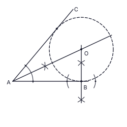
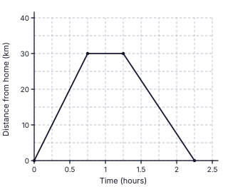
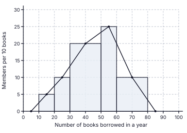
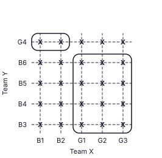
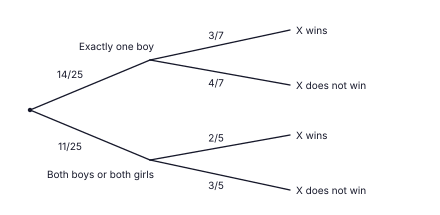

1. 8 × 18 = 144 worker-days; workers needed for 12 days = 144 ÷ 12 = 12; extra = 12 − 8
Final answer: 4 workers
(2 marks)2. Through E draw a line parallel to AB: AÊC = BÂE + EĈD (alternate angles); 125° = BÂE + 70°
Final answer: 55°
(2 marks)3. LCM = 12x: 9 − 10 + 812x
Final answer: 712x
(2 marks)4. Faces of a right prism are rectangles (and the two triangular ends); a square or an unequal-sided rectangle can be a lateral face, but a parallelogram with no right angle cannot
Final answer: (iii)
(2 marks)5. Magazines sector = 360° − (180° + 90° + 20°) = 70°; 90° ↔ 54 books, so 70° ↔ 54 ÷ 90 × 70
Final answer: 42 magazines
(2 marks)6. DC ⟂ AB (line from the centre to the mid-point of a chord); AD̂B + AÊB = 180° (opposite angles of a cyclic quadrilateral) ⇒ AD̂B = 80°; DC bisects AD̂B (△ADC ≡ △BDC) ⇒ CD̂B = 80° ÷ 2
Final answer: 40°
(2 marks)7. 4(x2 − 9)
Final answer: 4(x + 3)(x − 3)
(2 marks)8. 358 = 3.58 × 102; lg 358 = 2 + lg 3.58 = 2 + 0.5539
Final answer: 2.5539
(2 marks)9. a marked at C between CA and CB; b marked at B between the horizontal through B and BC; the horizontals are parallel, so a and b are alternate angles
Final answer: a = b
(2 marks)10. Curved surface = 2πr(5r) = 10πr2; one base = πr2
Final answer: 10 : 1
(2 marks)11. 16 equally likely outcomes; sum 6: (1,5), (5,1), (2,4), (4,2) = 4 outcomes; 416
Final answer: 14
(2 marks)12. AD = DB ⇒ DÂB = DB̂A = (180° − 40°) ÷ 2 = 70°; DB̂C = 180° − 70° = 110°; BD = BC ⇒ x = (180° − 110°) ÷ 2
Final answer: x = 35°
(2 marks)13. A = {3, 6, 9, 12}, B = {2, 4, 6, 8, 10, 12}; A ∩ B = {6, 12}; A ∪ B = {2, 3, 4, 6, 8, 9, 10, 12} so n(A ∪ B) = 8; n(A) = 4
Final answer: (ii)
(2 marks)14. 6x2y3 × 4x3y = 24x5y4; 24x5y412xy2
Final answer: 2x4y2
(2 marks)15. r = (−6) ÷ (−2) = 3; T5 = T3 × r2 = −6 × 9
Final answer: −54
(2 marks)16. BD̂C = BÂC = 38° (angles in the same segment); AD̂C = 2 × 38° = 76°; CB̂E = AD̂C (exterior angle of a cyclic quadrilateral)
Final answer: 76°
(2 marks)17. HCF of 8, 12, 20 = 4; lowest powers a2, b
Final answer: 4a2b
(2 marks)18. Volume of prism = 154h; πr2h = 154h ⇒ 227 r2 = 154 ⇒ r2 = 49
Final answer: r = 7 cm
(2 marks)19. AE = √(82 + 62) = 10, so EC = 10; BC = 2 × DE = 12 (mid-point theorem); DB = 8; perimeter = 12 + 10 + 6 + 8
Final answer: 36 cm
(2 marks)20. Gradient = 7 − 15 − 2 = 2; y − 1 = 2(x − 2)
Final answer: y = 2x − 3
(2 marks)21. DÂB = BĈD = 70° (opposite angles of a parallelogram); AÊB = 90° (angle in a semicircle); AB̂E = 180° − 90° − 70° = 20°; EB̂F = 180° − 20°
Final answer: 160°
(2 marks)22. Amount at the start of year 2 = 2 160 ÷ 8100 = 27 000; amount invested = 27 000 ÷ 1.08
Final answer: Rs. 25 000
(2 marks)23. AC ∥ BD ⇒ AĈB = CB̂D = 50° (alternate angles); angle at the centre = 2 × angle at the circumference ⇒ AÊB = 50° ÷ 2
Final answer: 25°
(2 marks)24. 2x > 1 − 9 ⇒ 2x > −8 ⇒ x > −4
Final answer: −3, −2, −1
(2 marks)25. Draw the bisector of angle A through the arc intersection (1 mark); draw the perpendicular to AB at B through the two arc intersections (1 mark); they meet at O
Final answer: O = intersection of the angle bisector at A and the perpendicular at B (OB = distance to AC)
(2 marks)
| (i) | |
| 1 − 14 = 34 | 1 |
| (ii) | |
| Spent on other expenses = 25 × 34 = 310 | 1 |
| 34 − 310 = 920 of the money received | 1 |
| (iii) | |
| Money received = 55 125 ÷ 920 = Rs. 122 500 | 1 |
| Food = 122 500 ÷ 4 = Rs. 30 625 ; other expenses = 310 × 122 500 = Rs. 36 750 | 1 |
| (iv) | |
| Let the salary be Rs. S: S − 10% (S − 100 000) = 122 500 | 1 |
| 0.9 S + 10 000 = 122 500 ⇒ 0.9 S = 112 500 | 1 |
| S = Rs. 125 000 | 1 |
| (v) | |
| 30 625125 000 × 100 | 1 |
| = 24.5% | 1 |
Total: 10
| (a)(i) | |
| Horizontal line from (0.75, 30) to (1.25, 30) (stay of 30 minutes) | 1 |
| Straight line from (1.25, 30) to (2.25, 0) (return in 1 hour), joined to the first part | 1 |
| (a)(ii) | |
| Speed = 30 km ÷ 1 h = 30 km h-1 | 1 |
| (a)(iii) | |
| 15 km from home at time 1.75 h on the graph; so 1 h 45 min after leaving (accept 1.7 – 1.8 h) | 1 |
| (b)(i) | |
| Arc AEB = 12 × 2 × 227 × 7 = 22 cm | 1 |
| Perimeter = 22 + 55 + 14 + 55 | 1 |
| = 146 cm | 1 |
| (b)(ii) | |
| Area of rectangle = 14 × 55 = 770 cm2 | 1 |
| Area of semicircle = 12 × 227 × 7 × 7 = 77 cm2 | 1 |
| 770 ÷ 77 = 10 times | 1 |

Total: 10
| (i) | |
| Rates = 15100 × 80 000 | 1 |
| = Rs. 12 000 | 1 |
| (ii) | |
| Annual rent = 10 000 × 12 = Rs. 120 000 ; maintenance = 10100 × 120 000 = Rs. 12 000 | 1 |
| 120 000 − 12 000 − 12 000 = Rs. 96 000 | 1 |
| (iii)(a) | |
| Number of shares = 6 000 ÷ 4 | 1 |
| = 1 500 | 1 |
| Amount invested = 1 500 × 80 = Rs. 120 000 | 1 |
| (iii)(b) | |
| Extra money added = 120 000 − 96 000 = Rs. 24 000 | 1 |
| 24 000120 000 × 100 | 1 |
| = 20% | 1 |
Total: 10
| (i) | |
| Frequency = height × (class width ÷ 10) | 1 |
| Readings 5, 10, 20, 25, 10; frequencies: 20 – 30 → 10 and 50 – 60 → 25 | 1 |
| 30 – 50 → 20 × 2 = 40 and 60 – 80 → 10 × 2 = 20 | 1 |
| (ii) | |
| Bars 10 – 20 (height 5) and 20 – 30 (height 10) correct | 1 |
| Bar 30 – 50 (width 20, height 20) correct | 1 |
| Bars 50 – 60 (height 25) and 60 – 80 (height 10) correct; tops of the bars match the polygon points | 1 |
| (iii) | |
| Cumulative frequencies 5, 15, 55, 80, 100 (all correct 2 marks; three or four correct 1 mark) | 2 |
| (iv) | |
| Members with 50 or more books = 25 + 20 = 45 (or 100 − 55) | 1 |
| Probability = 45100 = 920 | 1 |
| Number of books | 10 – 20 | 20 – 30 | 30 – 50 | 50 – 60 | 60 – 80 |
|---|---|---|---|---|---|
| Number of members | 5 | 10 | 40 | 25 | 20 |
| Cumulative frequency | 5 | 15 | 55 | 80 | 100 |

Total: 10
| (i) | |
| All 25 outcomes (5 × 5) marked with a cross | 2 |
| (ii) | |
| Closed curve around the 2 outcomes (B1, B2) with G4 | 1 |
| Closed curve around the 12 outcomes (G1, G2, G3) with (B3, B4, B5, B6); in all 14 outcomes | 1 |
| P(exactly one boy) = 1425 | 1 |
| (iii) | |
| First branches: 1425 (exactly one boy) and 1125 (both boys or both girls) | 1 |
| After "exactly one boy": X wins 37, does not win 47 | 1 |
| After "both boys or both girls": X wins 25, does not win 35 | 1 |
| (iv) | |
| 1425 × 47 + 1125 × 35 = 825 + 33125 | 1 |
| = 73125 (check: P(X wins) = 52125) | 1 |


Total: 10